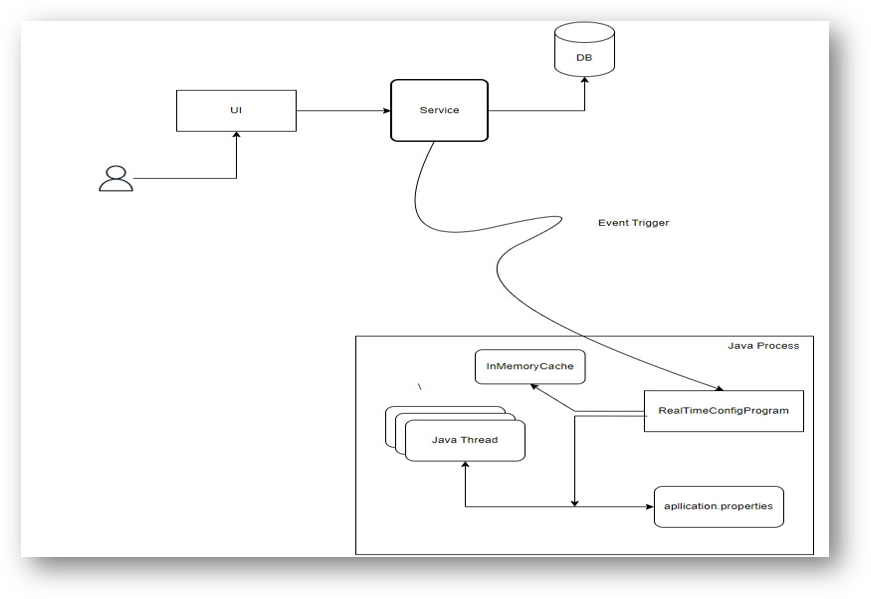

Real Time Config Update
Description
Typically, even minor changes can require days to redeploy the system. To mitigate this issue, we propose implementing a dynamic approach where the values in the configuration file can be reset during runtime, leveraging the data stored in the database. By adopting this approach, users will have the ability to update property values without the necessity of a redeployment.
Objective
- To enable runtime modification of property values in the configuration file without requiring a redeployment process.
- To design a library which has minimal run time.
- To minimize developer effort with minimal code modifications.
- To implement a user-friendly library.
Architecture

Features
- Minimal changes in code.
- If the property is not present in database, it will take the default value from application.properties file.
- Changes the values in run time, need not restart the application.
- It is Environment specific.
- Nothing is default. The user has to give the conditions inorder to run the annotation.
- All the conditions and end points are thoroughly tested.
Demo
Future Development
- To create a Professional UI for the Client.
- To replace the inmemory cache with Redis.
- Replacing the cache reduces the multi node inconsistencies.